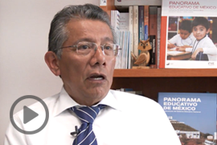
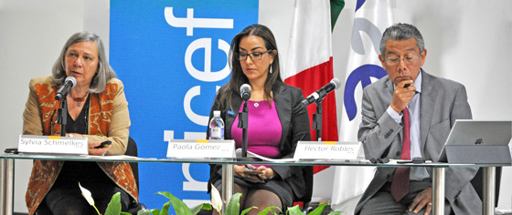
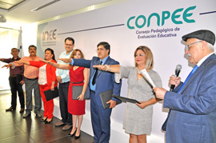
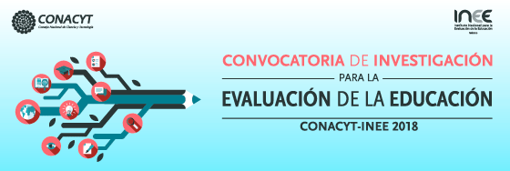
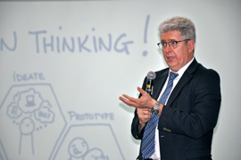
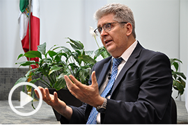

Dirección General de Comunicación Social
Boletín electrónico No. 67
El INEE realizó el Seminario XV Años del
Panorama Educativo de México
• Los resultados que proporciona esta publicación permiten establecer que en los últimos tres lustros se avanzó en el acceso a la educación obligatoria pero no se consiguió elevar el aprendizaje de la mayoría de los alumnos.
Presentación de Teresa Bracho » ********************** Publicación »
Conoce las opiniones sobre el Panorama Educativo de México expresadas por los investigadores que participaron en el Seminario |
|
|  |  |
|  | |
INEE y UNICEF presentaron el Panorama Educativo de la Población Indígena y Afrodescendiente• Insistiremos en la necesidad de una educación relevante, pertinente y de calidad y para todos los niños y jóvenes del país: Sylvia Schmelkes.
Presentación de Sylvia Schmelkes » Publicación » |
|
Felicita el INEE a Gilberto Guevara Niebla por su nombramiento en el nuevo gobierno |
|
|  | El Consejo Pedagógico de Evaluación Educativa (Conpee) cuenta con seis nuevos integrantes• Se trata de docentes y directivos en servicio cuya experiencia contribuye a mejorar la práctica educativa. |
 |
|
Entrevista a Yolanda Alvarado » |
Entrevista a Ezequiel Chávez » |
INEE y CONACYT invitan a participar en el Fondo Sectorial de Investigación para la Evaluación de la Educación
 |
|||
|  | Fernando Reimers, catedrático de la Universidad de Harvard, impartió la conferencia Apoyando a las escuelas a ofrecer una educación más relevante• El consejero del INEE, Bernardo Naranjo Piñera, y el presidente del CREFAL, Sergio Cárdenas, le dieron la bienvenida. |
|  | Reimers habla en entrevista sobre la importancia de la escuela en el empoderamiento de los jóvenes |
|
|